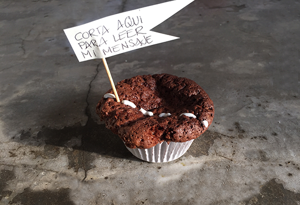
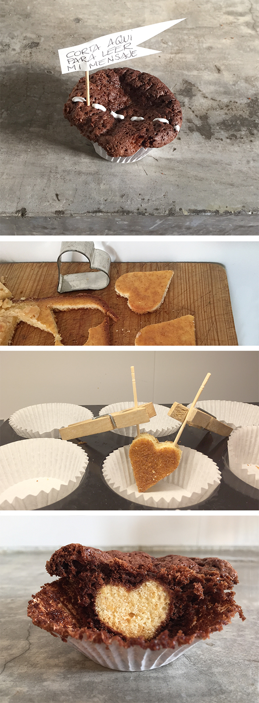

Mensaje de San Valentín para los enamorados. Corta encima de la línea para ver el mensaje. Corta un corazón de un pastel claro. Entonces pon lo, con la ayuda de pinzas y palillos de pie en un molde para muffins y verte la masa de Brownie encima. Si el brownie esta horneado y frío saca los palillos de dientes con cuidado, la línea tiene que pasar justo en cima de los agujeros!
